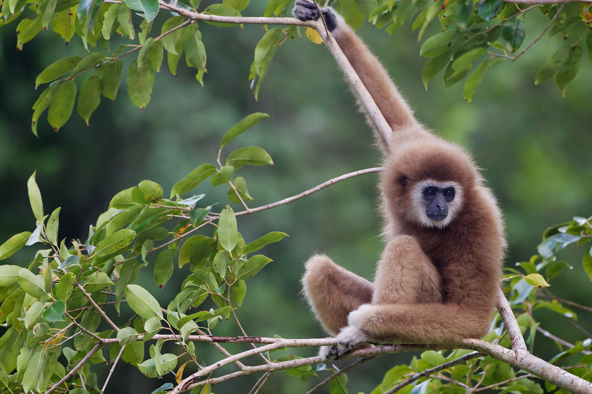

Gibbon
< Panther Chameleon
Himalayan Vulture >
Gibbons are small apes that belong to the family Hylobatidae. They are known for their slender bodies, long arms, and the ability to brachiate (swing from branch to branch using their arms). Gibbons are found in the tropical and subtropical rainforests of Southeast Asia, including Indonesia, Thailand, and Malaysia. They are known for their distinctive vocalizations, which can be heard over long distances in the forest.